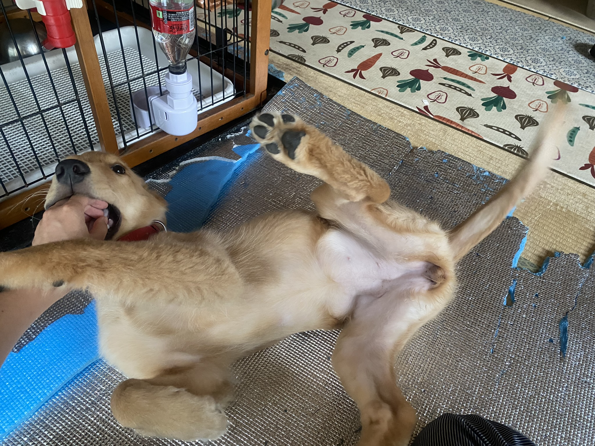
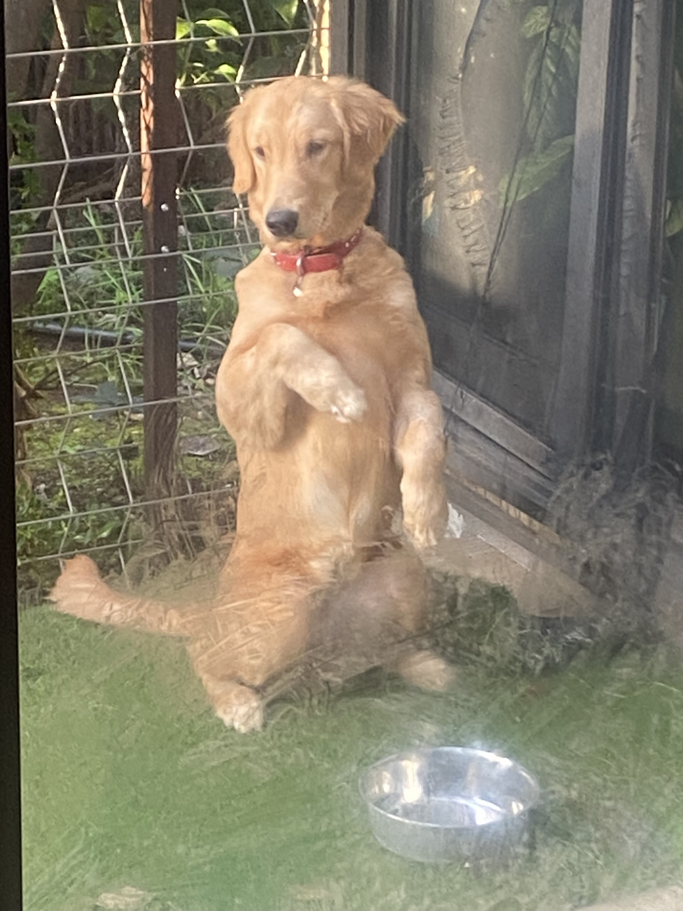

ゴールデンレトリバーの注意点
ゴールデンレトリバーはフレンドリーすぎることで知られています。
それゆえに突然とびかかってきたり、遊びのつもりで子犬の時は噛んだりしてきます。
うちの愛犬ふくは誰にでもフレンドリーというわけではありませんが、家族に対して
とびかかる、噛むは日常です。時に家の物を壊したりしました。
それゆえに突然とびかかってきたり、遊びのつもりで子犬の時は噛んだりしてきます。
うちの愛犬ふくは誰にでもフレンドリーというわけではありませんが、家族に対して
とびかかる、噛むは日常です。時に家の物を壊したりしました。
- 
- 